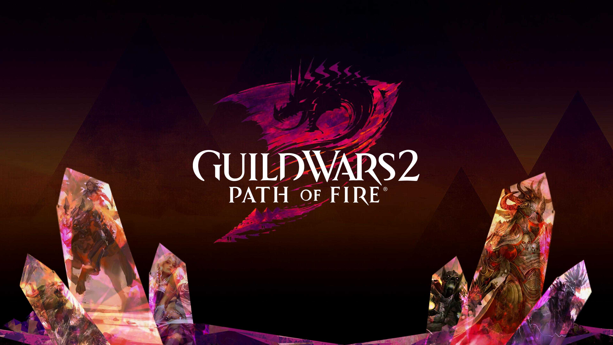
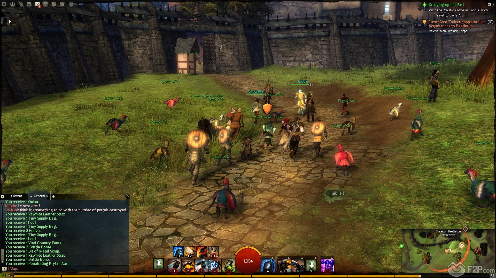

RANKED THIRD: GUILD WARS 2
Guild Wars 2 is a completely different game than its predecessor. Released in 2012, Guild Wars 2 is one of the few MMORPGs that have been able to live up to its hype. Through a unique story system where players are able to determine the outcomes based on their actions, GW2 provides a dynamic environment for its consumers to develop in. The game excels in user interactions, from being able to use the environment to the user's advantages to large-scale alliance based guild fights, GW2 is unique in the experience it brings to its consumers. In 2015, the game has changed its payment model from subscription based to free to play with optional in-game premium purchases in an attempt to increase its player population. With expansions and patches set in 'seasons', the game is currently in its 4th season, released in November 2017, under the expansion name of Path of Fire. GW2 is also known for its brilliant and balanced PvP system.
Details:
Release Year: 2012
Payment Model: Free to Play with Microtransactions
Latest Expansion Date: November 2017
Next Expansion Date: Unannounced
Total Accounts Created: Over 10 Million
Current Active Playerbase: Unknown, at least 100,000
Company: NCSoft
Release Year: 2012
Payment Model: Free to Play with Microtransactions
Latest Expansion Date: November 2017
Next Expansion Date: Unannounced
Total Accounts Created: Over 10 Million
Current Active Playerbase: Unknown, at least 100,000
Company: NCSoft

Rankings: